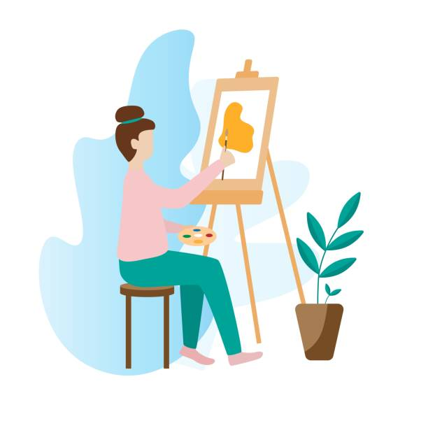

Cei care isi intrebuinteaza rau timpul sunt cei dintai care se plang de scurtimea lui..(Jean de la Bruyere)
Timpul meu liber este ocupat de activitati cum ar fi:
Pictura, cititul, privitul filmelor,gatitul, ascultatul muzicii,crosetatul,practicarea sportului

Cei care isi intrebuinteaza rau timpul sunt cei dintai care se plang de scurtimea lui..(Jean de la Bruyere)
Pentru a-mi dezvolta cat mai bine aceasta abilitate frecventez cursuri la Artico
O mica galerie cu propriile picturi
Dacă muzica este hrana iubirii, cântați, dați-mi-o până la saturație.(William Shakespeare)
Ascult muzica deoarece consider ca are urmatoarele avantaje:
Consider ca alcatuirea unui program saptamanal este esentiala pentru reusirea indeplinirii tuturor activitatilor propuse
de aceea am facut si eu propriul tabel
| Zilele saptamanii | Lectii | Activitati extracurriculare | Imagine |
|---|---|---|---|
| Luni | L.Universala L.Universala Informatica Matematica Biologia | Cursuri de engleza | |
| Marti | Ed.Fizica Geografie Ed.Economica Fizica Chimia L.Engleza Ed.pentru societate | Cursuri de pictura |  |
| Miercuri | L.Romana Istoria Fizica L.Italiana L.Italiana L.Romana | Voluntariat la biblioteca | |
| Joi | L.Engleza L.Romana L.Romana Dezv.Personala Geografie L.Italiana | Cursuri de engleza Workshop-Cum sa faci o banda desenata | |
| Vineri | Istoria Istoria L.Romana Matematica Matematica Ed.Fizica | ------ | |
| Sambata | ------ | Cursuri de pictura | |
| Duminica | ------ | ------ |